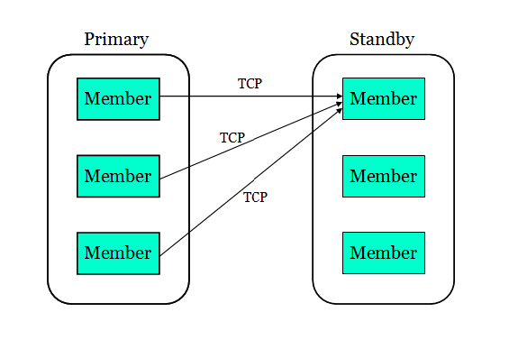

HADR on pureScale
Table of Contents
DB2 pureScale architecture provides excellent HA (High Availability). Beginning in DB2 V10.5, you can use the familiar HADR feature on pureScale for DR (Disaster Recovery) protection. This page is a tutorial for using HADR on pureScale. See reference below for additional materials.
As in non pureScale environment, with HADR, the primary database sends transaction logs to the standby database, who replays the logs in real time to stay in synch with the primary. On pureScale, each database is made of multiple members. On the standby, only one member replays the logs. On the primary, each member has its own log stream. With HADR, each primary member opens a TCP connection to the standby replay member to ship its log stream to the standby. The following picture shows the data flow:

The main reason for single member replay on standby is that HADR uses the same replay infrastructure as database roll forward, which only supports single member replay. Given that only a portion of primary's workload is write, which generates logs, and log replay usually costs less resource than processing SQL statements, standby replay speed usually can keep up with primary log generation. For example, primary has 4 members and each has a 25% write ratio. So total write load is 100% of one member's capacity. One replay member should be able to keep up. Still, you may configure a "fat" member on the standby as the replay member.
On the primary, transaction logging and HADR operation in a member closely resembles a database in non pureScale environment. There is an HADR thread in each primary member that ships log data to the standby. See HADR log shipping for more info.
On the standby, things in the replay member is somewhat different from that of non pureScale. In the replay member, a dedicated HADR thread is created to serve each stream. This thread receives log data from the primary, then passes the data to the replay mechanism, which merges the streams into one logical stream. The merge is necessary in order to reconstruct transaction order on the primary cluster. The merged stream is then fed to parallel replay, which uses multiple threads to replay the log records in parallel. The same parallel replay mechanism is used for pureScale and non pureScale. Although replay cannot span multiple members, it does use the multiple CPU's on replay member for parallel work. The default number of replay threads is the number of physical CPU cores on the host.
On the standby, database is inactive on non replay members.
On both primary and standby, log stream id and standby id numbers are appended to the HADR thread name. See HADR threads for more info. The logging threads have log stream id appended too.
Shipping all log streams to a single standby member can create network bottleneck. The HADR simulator can be used to
test network performance
during planning.
Replay performance should be tested during planning too. Pre-generated log files can be fed to a test system for rolling forward. Rolling forward and HADR replay performance should be very close because they use the same infrastructure.
The member where "start HADR" command is run is designated as the preferred replay member. The designation is persistent. It stays until the next designation. DB2 favors the preferred member when choosing a replay member. The preference is only a recommendation to DB2. If the preferred member is not available (for example, db2 instance is offline on the member), DB2 will choose another member. Note that both "start HADR as primary" and "start HADR as standby" commands designates the preferred member. On the primary, the designation does not take effect until the database becomes a standby.
If "start hadr" command returns success, preferred replay member is updated. If "start hadr" command returns failure, preferred member may or may not have been updated, depending on how far the command execution went.
If a database is already active and in the desired role, the "start hadr" command will be a nop (no operation performed). It will return "SQL1777N HADR is already started." and the preferred replay member is NOT updated. Thus to re-designate the preferred member for an online standby, you need to deactivate it first, then issue "start HADR as standby" on the preferred member.
Preferred replay member designation is at database level. Different databases in the same instance can have different preferred replay member.
The HADR_FLAGS field from monitoring will report
STANDBY_REPLAY_NOT_ON_PREFERRED when the current replay member is not the preferred member. If you have set up a "fat" member as the preferred member, you should be alerted when replay is not running on the fat member. T
here is no user interface to return exactly which member is the preferred member. When in doubt, re-designate the preferred member to make sure it is configured as intended.
Because start hadr command has the side effect of setting preferred replay member, using "activate db" command to start database is preferred over the "start hadr" command. See also
HADR database startup/shutdown
Following the pureScale HA design goal, partial failure (some members fail) will not prevent DB2 from providing continued service. This applies to both primary and standby. On the primary, all usual pureScale availability features apply. On the standby, if the current replay member fails, DB2 will automatically migrate replay and log receiving to another member. The migration favors the preferred member as destination. If replay moves off the preferred member, it does not "fail back" when the preferred member is back online. To move replay back to the preferred member, run "deactivate database", then "activate database" on the standby.
Note: The "deactivate db ... member" command shuts down a database on a specific member. If the member is the replay member, database will be deactivated on the member, but standby high availability will kick in and DB2 will auto restart replay. Preferred member selection applies when restarting replay. The previous replay member may or may not be selected as the new replay member. To shutdown the standby completely, use the "deactivate db" command without "member" clause. To do maintenance on a member host, stop db2 instance on it so that it will not be selected as replay member. See
Performing maintenance on a member host
For more info on replay member, see "
HADR standby replay in a DB2 pureScale environment
" in Info Center.
Another high availability feature, assisted remote catchup allows HADR to continue functioning when some primary members cannot connect to standby.
If a primary member cannot connect to the standby replay member directly, another member can open an extra TCP connection to the standby replay member to ship its log stream. This is known as "Assisted Remote Catchup". As long as one primary member can connect to the standby, log shipping of all streams will go on, although shipping speed will suffer.
Assisted remote catchup automatically kicks in when the stream owning member loses connection to standby. If the assisting member loses the assisting connection, the assisting process will start over. The previous assisting member may or may not be chosen as the new assisting member. Load balancing is performed across primary members who can still connect to the standby.
When a log stream is in assisted remote catchup, it will be reported as in remote catchup state, with the ASSISTED_REMOTE_CATCHUP flag set in the HADR_FLAGS monitoring field. See " Monitoring HADR " section below for more info. You may want to set up scripts to alert DBA when assisted remote catchup occurs.
Assisted remote catchup covers the following 2 scenarios:
For ease of administration, the HADR commands (start/stop/takeover HADR) are all cluster scope. Running a command on any member applies the operation to the whole cluster, even if database is not active on the issuing member. As long as db2 instance is online on a member, you can issue HADR commands on the member. DB2 will coordinate across the members. This applies to both primary and standby. This is particularly useful on the standby because database is inactive on non-replay members.
Note: In pureScale, when we say "db2 is active/inactive (or online/offline)" on a member, it can be ambiguous. "db2" can mean the db2 instance on the member, or the database service for a given database running on the member. In this page, we usually mean the latter (database service on the member).
"Activate db" command on the standby will select a replay member, with preference to the preferred replay member, then start log receive and replay on the member. Other members remain inactive. The "activate db" command itself can be issued from any member.
"Deactivate db" command (without "member" clause) on the standby will deactivate the replay member. Non-replay members remain inactive. The "deactivate db" command itself can be issued from any member.
There are some restrictions for HADR on pureScale:
For general restrictions applicable to both pureScale and non pureScale, see Restrictions for high availability disaster recovery (HADR) in Info Center.
The procedure of setting HADR on pureScale is largely the same as on non pureScale systems. You create the standby database, configure HADR parameters on primary and standby, then run the "start HADR" command.
For a sample scenario, see "
Scenario: Deploying HADR in a DB2 pureScale environment
" in Info Center. As of Dec. 2013, there is a documentation error on the Info Center page. The "member" clause is missing in the "db2 update db cfg" statement for member level parameters. The command should be "
update db cfg for hadr_db
member
<x> using".
This defect is being fixed.
As in non pureScale environment, two methods are supported:
With the exception of hadr_local_host and hadr_local_svc, all HADR database configuration parameters are cluster scope (a single value is accepted and applied at cluster level).
Wherever a host address is expected (in hadr_local_host, hadr_remote_host, and hadr_target_list), either a host name, or a numerical IP address is accepted. For numerical IPv6 address, see the relevant parameter in Info Center for accepted format.
Wherever a port number is expected (in hadr_local_svc, hadr_remote_svc, and hadr_target_list), either a service name, or a numerical port number is accepted.
This page only lists the minimal set of parameters you need to update to set up HADR. Parameters (such as hadr_timeout) with reasonable default are not listed. See HADR config for other HADR parameters.
These two parameters define the TCP address on which a database listens for incoming connection requests. In pureScale, they are per member scope. Example:
db2 "update db cfg for hadr_db member 0 using hadr_local_host host0.ibm.com hadr_local_svc 4000"
Unless the members share a physical host (allowed, but not a practical real world setup), an "update db cfg ... member <x> using hadr_local_host <hostX>" statement is needed for each member. For hadr_local_svc, a common port is recommended, so a single "update db cfg for hadr_db using hadr_local_svc <commonPort>" statement will cover all members.
Each member listens on its local address. There must not be duplicate addresses. In the case of members sharing a host, you must use different port number for the members.
This parameter lists remote databases' addresses. It defines what databases are allowed to connect as standbys when the local database is a primary. A pureScale database is represented in the list as "{host0:port0|host1:port1|host2:port2}" , where "{...}" encloses members in the same cluster, and the "|" (vertical bar) character delimits members. Each host:port pair identifies a member by its address. The member address comes from the hadr_local_host and hadr_local_svc configuration on the remote database. DB2 compares addresses after resolving host name to IP address and service name to port number. So the text in hadr_target_list need not match the text in hadr_local_host and hadr_local_svc on the remote database.
hadr_target_list is used to bootstrap primary-standby communication. Both primary and standby attempts to contact the remote database using addresses in hadr_target_list. Once a database reaches a listed remote member, it will retrieve the full member list of the remote database. Listing all members of a remote database in hadr_target_list is not required, but recommended when the number of memebers is small (such as 4). For large clusters, list the members that are most likely to be online if not all members are listed. If none of the listed members are online, primary and standby cannot connect to each other. As long as one member from a cluster is listed, the cluster is considered listed and will be accepted as a standby. If a listed member address does not actually belong to the remote cluster, it is ignored.
hadr_target_list accepts a string up to 2048 bytes long. Assuming 50 characters for each address, it can hold about 40 member addresses.
Example of a 3 member listing:
db2 "update db cfg for hadr_db using hadr_target_list {host0.ibm.com:4000|host1.ibm.com:4000|host2.ibm.com:4000}"
In hadr_target_list, multiple standbys are listed as "
standby1|standby2|standby3
". The "|" character is used to delimit members within a cluster and to delimit multiple standbys. When "|" is within a "{ }" enclosure, it is a member delimiter, otherwise, it is a standby (database) delimiter. "{ }" enclosure around members of a database is mandatory on pureScale, even if only one address is listed for a cluster. In non pureScale environment, "{ }" is optional.
In a future release where multiple standby is supported on pureScale, hadr_target_list can be
"{hostA0.ibm.com:4000|hostA1.ibm.com:4000|hostA2.ibm.com:4000}|{hostB0.ibm.com:4000|hostB1.ibm.com:4000|hostB2.ibm.com:4000}"
, where two clusters (hostA* and hostB*) are listed.
For more info on hadr_target_list, see
HADR target list database configuration parameter
in Info Center.
In pureScale, only ASYNC or SUPERASYNC modes are supported. As in non pureScale environment (when hadr_target_list is set), hadr_syncmode specifies the syncmode of the primary - principal_standby pair when the local database is the primary. For example, hadr_syncmode is set to ASYNC on database A and SUPERASYNC on database B. When A is the primary, the pair uses ASYNC mode. When B is the primary, the pair uses SUPERASYNC mode.
Note: hadr_syncmode defaults to NEARSYNC in non pureScale environment and ASYNC in pureScale environment.
For more info, see
HADR sync mode
Note: A logical NULL value of database configuration parameter is displayed as empty string (zero length string) in "db2 get db cfg" command output. To explicitly set a parameter as NULL, use the "db2 update db cfg for <dbName> using <parameterName> NULL" command. "NULL" must be spelled in upper case, otherwise, it is interpreted as literal string "null".
While these parameters are under auto config control in pureScale and non pureScale environment (when hadr_target_list is set), there are some differences:
- In pureScale, hadr_remote_host, hadr_remote_svc, and hadr_remote_inst are allowed to be NULL on HADR startup. They will be auto configured after HADR starts.
- In non pureScale environment, they are all required to be not NULL on startup and it is recommended that users set them to the correct values (what auto config would set them to), because these values are used by integrated cluster manager, which may start using the values before they are auto configured. In pureScale, integrated cluster manager does not manage HADR, so these parameters are allowed to be NULL. In any case, auto config will correct any incorrect values after HADR startup.
- In non pureScale environment, the remote database's host and port are set in hadr_remote_host and hadr_remote_svc, respectively.
- In pureScale environment, in order to represent multiple members of a remote database, the remote database's member list is set in hadr_remote_host, using hadr_target_list format, while hadr_remote_svc is always set to NULL.
hadr_remote_host
This parameter is under auto config control. You can leave it as NULL on pureScale. On primary, it will be auto set to the principal standby's member list. On the standby, it will be set to the primary's member list. Since only one standby (the principal standby) is supported in pureScale, whatever listed in hadr_target_list is the one and only remote database. Thus auto config will simply copy the string from hadr_target_list into hadr_remote_host.
hadr_remote_svc
hadr_remote_svc is under auto config control. In pureScale, DB2 always sets it to NULL.
hadr_remote_inst
This parameter is under auto config control. You can leave it as NULL on pureScale. On primary, it will be auto set to the principal standby's instance name. On the standby, it will be set to the primary's instance name.
Note: Starting in DB2 V10.1, starting HADR on the primary while the database is already online will pick up the latest HADR configuration. This means that you can set up HADR with no outage on the primary. See also
Refreshing HADR configuration
First, decide which member is the preferred replay member on each (primary and standby) database. Then as in non pureScale, run the "start hadr" command to start HADR.
- Run the 'db2 start hadr on db <db> as standby' command on the standby's preferred replay member. Log receive and replay will be started on the preferred member. Database remains inactive on other members.
- Run the 'db2 start hadr on db <db> as primary' command on the primary's preferred replay member. If database is offline when the command is issued, it is activated only on the member where the command is issued. If database is online when the command is issued, all members remain online and the issuing member is brought online if it was offline.
As in non pureScale, standby should be started first. To prevent split brain, a primary cannot be started if it cannot find its standby, unless the "start hadr ... as primary
by force
" command is used. In pureScale, any primary member making contact to the standby satisfies the "finding" standby requirement. The requirement applies only to starting HADR on cluster lever. Once HADR is started, member start and restart does not require connection to standby, even when no other member has connection to the standby.
After starting, the HADR pair will connect to each other. Each stream will independently go through state transition. For definition of HADR states, see Db2 high availability disaster recovery (HADR) database states in Info Center. You should monitor HADR to verify that state transition proceeds as designed.
The start HADR command change database role from standard to primary and standby. The change is persistent. You can activate/deactivate the primary and standby database using the usual "activate/deactivate db command". See also HADR database startup/shutdown . The role will not change on deactivation/reactivation. The 'start standby first" requirement described above remains after the initial HADR setup.
Managing HADR is easy. There are only 3 HADR commands. See Start/stop/takeover HADR commands
Only the db2pd command and MON_GET_HADR table function return HADR info on pureScale. Deprecated interfaces such as database snapshot does not return any HADR information on pureScale. For general HADR monitoring, see
HADR monitoring
In monitoring output, LOG_STREAM_ID is the log stream's id, which is usually the same as the owning member's member id. PRIMARY_MEMBER and STANDBY_MEMBER fields indicate the primary and standby member processing the log stream (source and destination of log shipping). STANDBY_MEMBER field will be the same for all streams. It indicates the current replay member on the standby.
The db2pd command and the MON_GET_HADR table function return essentially the same information, but because reads on standby is not supported in a DB2 pureScale environment, you can only use the db2pd command to monitor from a standby. As well, the db2pd command is preferred during takeover because there could be a time window during which neither the primary nor the standby allows client connections.
For assisted remote catchup streams, the assisted member will report the stream as in DISCONNECTED state; the assisting member will report the stream as in REMOTE_CATCHUP state, with the ASSISTED_REMOTE_CATCHUP flag set in the HADR_FLAGS field. The assisting member's report will show LOG_STREAM_ID and PRIMARY_MEMBER mismatch. For example, you may see log stream id 1 and primary member 2, indicating that member 2 is assisting member 1.
The "db2pd -hadr" command returns a section for each stream the local member is processing. On the primary, it returns the stream the member owns and any stream the member is assisting via assisted remote catchup. Thus an assisted remote catchup stream is reported by the assisted and assisting member. To see all streams on the primary, add -allmembers option to db2pd. On the standby, all streams are returned when the command is issued on the replay member; on a non-replay member, db2pd will report that the database is not active on that member and return no data.
In a DB2 pureScale environment, the MON_GET_HADR table function returns a row for each log stream. Its argument specifies what streams are returned. The argument can be
- A member number for that member's stream and any stream it is assisting via assisted remote catchup.
- The special value -1 or NULL for the local member's stream (the member where the query connects to)
- The special value -2 for all members. An assisted remote catchup stream only shows up once in the output, under assisting member's listing.
For more info, see
High availability disaster recovery (HADR) monitoring
in Info Center.
The standby database can become a primary using the takeover command. The takeover command is only allowed on the standby. It can be issued on any standby member, including non-replay members. Both forced and non forced takeover are supported. The takeover behavior is largely the same as in non pureScale environment.
For general info on takeover, see
HADR takeover
. For pureScale specifics, see
HADR takeover operations in a Db2 pureScale environment
in Info Center.
Takeover eligibility is based on the streams' HADR state. For definition of the states, see Db2 high availability disaster recovery (HADR) database states in Info Center.
The syntax for non forced takeover is "db2 takeover hadr on db <dbName>". With this command, the primary and standby switch roles. It guarantees no data loss (new primary has all data from old primary). This command can only be issued on the standby.
Role switch is allowed on pureScale only when each log stream satisfies the following condition:
The same condition also applies to non pureScale environment, which is treated like a single stream system. Non pureScale systems never do MCR or assisted remote catchup, thus these two conditions have no effect in non pureScale environment.
Allowing assisted remote catchup streams allows role switch even if there is network problem between some primary members and the standby, or some primary members are inactive. User should check primary-standby log gap on remote catchup and assisted remote catchup log streams before issuing takeover command. Large gap can cause long takeover because takeover needs to ship and replay all logs in the gap.
Role switch is not allowed if any primary member is in member crash recovery (MCR) pending or in-progress state. Because pureScale clusters are designed to start and finish MCR quickly, MCR pending or in-progress state should be short. Encountering MCR pending or in-progress state during takeover should be rare. Should this happen, user can simply retry takeover after MCR completes on the primary.
If the primary database is performing group crash recovery (GCR), then the streams cannot be in the required states for role switch, therefore the takeover command will fail.
During role switch, on the old primary, a member that has direct connection to standby is chosen as the replay member, with preference to the preferred replay member (the preferred member will not be chosen if it has no direct connection to the standby). Log receive and replay is then started on the chosen member. Database is deactivated on all other members.
During role switch, on the old standby, the replay member is converted to primary role and stays active. Other members remain inactive. Thus only a single member is active on the new primary initially. Other members can be activated via "activate db" command or client connection.
The syntax for forced takeover is "db2 takeover hadr on db <dbName> by force ". With this command, the standby becomes the new primary. The primary remains in primary role. This command is usually used in failover scenario, after the primary fails. The command can only be issued on the standby. It can succeed even if the primary is down or unreachable. The primary is disabled if the standby can reach it, otherwise, nothing is done to the old primary. There can be data loss (some data on old primary is not replicated to new primary). To avoid split brain, user should securely shut down or fence off old primary before issuing a forced takeover on the standby.
Forced takeover is allowed only when each stream meets one of the following condition:
This applies to both pureScale and non pureScale environment. The only disallowed state is local catchup.
Forced takeover is allowed when log archive retrieval is in progress on the standby (stream state is remote catchup pending). DB2 will stop log retrieval first, then perform the usual takeover procedure.
For forced takeover, the standby will send a poison pill to the old primary if it has a connection to any of the old primary's member. The poison pill will disable the old primary to avoid split brain, but leave it in primary role. The old standby's replay member will change into an active primary member. Other old standby members remain inactive.
Reintegrating the old primary as the new standby after a failover is supported in pureScale environment. Reintegration will succeed only if the old primary's log streams have not diverged from the new primary's.
Same as in non pureScale environment, reintegration is done via the "start hadr ... as standby" command. The command can be issued on any old primary member. Because this command also designates the processing member as the preferred member, issue it only on the intended preferred replay member.
Prior to issuing the "start hadr ... as standby" command, database must be offline on all old primary's members. The CF need not be shutdown and restarted. Any remaining CF data structure for this database will be auto cleaned upon reintegration.
Do NOT use the "deactivate database" command
on the old primary to shut it down on all members for reintegration, because deactivation creates a hard checkpoint that makes the old primary's log streams incompatible to the new primary's. Kill any remaining old primary member instead.
Because it may be necessary to kill an old primary database, it is recommended that only one HADR database be created in a DB2 instance, so that the kill will not impact other databases.
Clients can be auto rerouted to the new primary after a takeover. See client reroute for more info.
See Configure parameters for IBM Data Server Driver for JDBC and SQLJ against HADR for DB2 pureScale for setting up client reroute for Java client against HADR database on pureScale.
Topology change (add/drop member) requires special attention in HADR environment. See Db2 pureScale topology changes and high availability disaster recovery (HADR) in Info Center for more info.
Spooling is supported on pureScale. The hadr_spool_limit is a cluster level parameter. The limit is applied on a per stream basis (each stream can spool up to this limit).
hadr_spool_limit defaults to AUTOMATIC starting V10.5. Internally, AUTOMATIC is interpreted as amount of log data in logprimary + logsecond log files. The STANDBY_SPOOL_LIMIT monitor field returns the computed spool size in unit of pages.
The default applies to both pureScale and non pureScale environment. For non pureScale environment, this is a change of behavior from releases prior to V10.5, where the default was 0 (spooling disabled). The rationale is:
See also hadr_spool_limit
Delayed replay is supported on pureScale. See also delayed replay
HADR rolling update can be used for DB2 fix pack, or operating system / hardware upgrade. The primary and standby databases are updated in a rolling fashion. Update is applied on a database only when it is in standby role. A role switch is performed to change the primary database into standby role, so that it can be updated. There is always a database to serve the clients as primary. There is no down time during the update. See
Rolling update on single standby systems
and
Rolling update on multiple standby systems
in Info Center.
On a pureScale system, users can perform rolling update across the members and CFs. The procedure ensures that at least one CF and at least one member stays online, so that the cluster stays online to serve clients. See
pureScale rolling update
in Info Center. For HADR primary and standby databases, a special procedure must be used for DB2 fix pack update. See
pureScale rolling update on HADR databases
. The HADR procedure only uses pureScale roling update capability to update the primary and standby. No HADR capability such as role switch is used. The key is to update the standby first, so that primary and standby can keep connected (HADR requires standby to be on newer fix pack).
If pureScale rolling update does not involve changing DB2 version, the procedure is more flexible. As long as you keep at least one CF and at least one member online, a procedure will work. See Performing maintenance on a member host . For HADR pureScale systems, you just need to update both primary and standby (in either order). No special procedure is needed.
Neither HADR nor pureScale rolling update supports update across DB2 major release boundary. For example, you can update from V10.1 fp1 to fp2, but not from V10.1 to V10.5. This limitation results from operational incompatibility across major releases. Because Q Replication does not require the source and target databases to be on the same major release, it can be used to create a replica of the database to perform rolling update using a procedure similar to HADR rolling update. But this method needs more hardware and admin resource.
On HADR pureScale systems, you have the choice of using HADR rolling update, or pureScale rolling update. The following table is a comparison to help you make the decision.
| HADR rolling update | pureScale rolling update | |
| Update with no down time | Yes | Yes |
| Update across major release | No | No |
| Allow bringing down whole cluster | Yes. Primary and standby databases are brought down in a rolling fashion. | No. Critical resources such as shared storage device must stay up to keep the cluster online |
| Impact to system capacity |
No impact to capacity with same primary/standby hardware.
Reduced capacity when primary is on a site with weaker hardware. Reads on standby is not available when a standby is being updated. |
Reduced cluster capacity when a member is being updated. |
| Impact to HA protection provided by pureScale |
Full HA protection remains on the pureScale cluster in primary role |
Reduced HA protection when one CF is being updated. Member update has less impact. |
| Impact to HA and DR protection provided by HADR | On single standby systems, HA+DR protection is lost when the standby is being updated. On multiple standby systems, reduced protection when one standby is being updated. |
Very brief interruption. The level commit step on primary or standby will break primary-standby connection momentarily (for a few seconds). |
| Client reroute required | Yes. Clients need to be rerouted when primary role moves to another database. This can be a problem if clients have slow network connection to the new primary (for example: primary and standby are geographically distant and clients cannot be moved together with the primary role). | No. Clients always connect to the same cluster. |